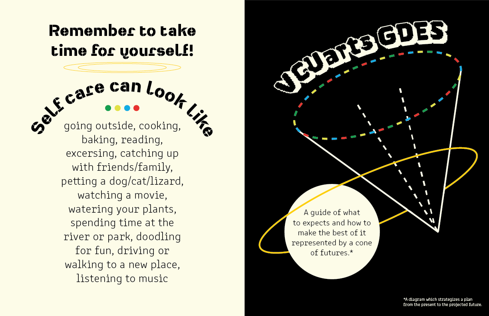

VCUarts Guide to GDES
Tools: Adobe InDesign, Adobe Illustrator
The goal of designing a guide to the graphic design program at VCU was to explore new ways to relay information. The cone of futures is a diagram that interested me during my research process. Also known as the cone of plausibilty, it's purpose is to act as a visual aid when strategizing for projected future outcomes and creating a plan to get from point A to point B. Throughout my process, I reflected on my experiences so far as a junior at VCU and what I wish I knew going into my first semester in the program.
Final outcome:
